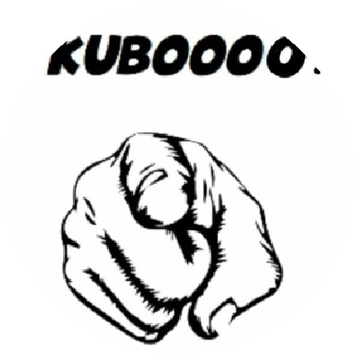

Company Overview
KUBOOOO Isa local brand formed by two guys who grew up in the hood and had a vision of creating a brand and in the process giving back to the community .KUBOOOO was established in a form of encouragement that one has to fight for whatever they want to achieve in life no matter what the odds against you are, if you work hard and give it your al you can achieve it. That ‘show the word KUBOOOO came about
The company’s line of business includes the retail or wholesale of specialized brand of shirts and customize shirts. Tmaker’s main product line includes polo shirts, t-shirts, hoodies, caps, aprons, towels and other special custom apparel that can easily be personalized with images, custom text and imprinted or embroidered. Using state of the art production equipment and the latest technologies in software, the company has established itself to be the optimal choice for customized apparel.
Directors Biography
WANGA NTSHONTI has been employed in various business industries for more than closely 20 years. His previous employment was educational and experimental to him. Where he fufilled the responsibility of leading people and gaining experience. He had 15 years of service in Hospitality. Texttile and cleaning industries and was involved in leading people and now he is the Co-Founder and director of KUBOOOO clothing brand. Futhermore with his education on entrepreneurship and business management academically knowledge gives us more edge for the sustainability of business perspective.
Directors Biography
Xola Klaas is a hard-working person. Punctual and able to work independently and with others /groups or teams. Mr Klaas reliable,and a good listener with communication skills, He ha good leadership attribution and can adapt easily t organisational changes. I am easy to work with; I have vas experience in community development and can work unde pressure with the different personalities and very versatile.